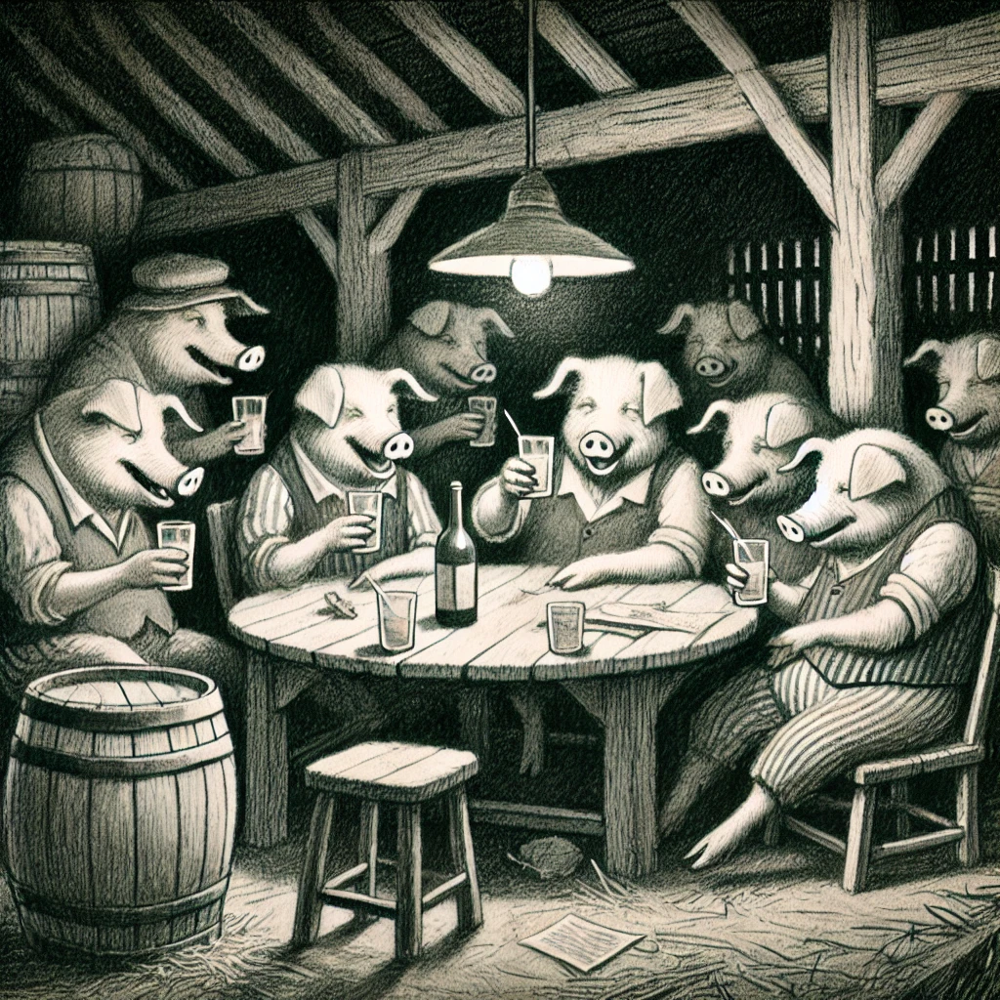

동물농장
목차
작가
조지 오웰
출판일
1945년
감상평에 대한 AI그림
조지 오웰의 동물농장은 소련 공산주의 정권의 독재, 부패 과정을 우화적 요소로 풍자한 소설이다. 이 책을 읽으며 소련의 독재주의의 역사에 대해 궁금해졌고, 세계의 역사에 관심을 가지게 되었다. 비슷하게 전체주의에 대한 비판을 다루는 같은 작가의 소설 '1984'를 이어서 읽었는데, 작가의 이야기 전개 방식이 좋다고 느꼈다.

감상평에 대한 AI평가
이 감상평에서는 책을 통해 새로운 역사적 관심을 가지게 된 점이 인상적입니다. ‘동물농장’을 읽으며 소련의 독재와 전체주의에 대한 호기심이 생겼고, 이를 계기로 ‘1984’까지 읽으며 작가의 전개 방식에 매력을 느끼신 점에서 지적 호기심과 탐구심이 돋보입니다.
✨ 호기심과 탐구 – 소련의 독재 역사를 알고 싶어졌고, 더 넓은 역사적 관심으로 확장되었습니다.
✨ 흥미와 만족 – ‘1984’까지 읽으며 조지 오웰의 전개 방식이 마음에 들었다는 점에서 긍정적인 감정을 느끼셨습니다.